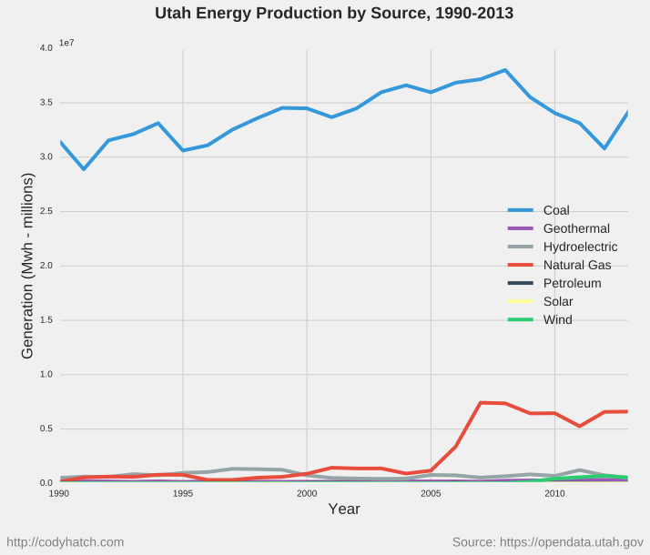

Utah Energy Production
When I read so many articles about Utah's coal industry and the lack of real concern about coal-plant pollution in Utah, I reflect on this little chart I've had sitting around for some time now.
I grabbed the data from Utah's Open Data Portal which, unfortunately, only has data up through 2013.
